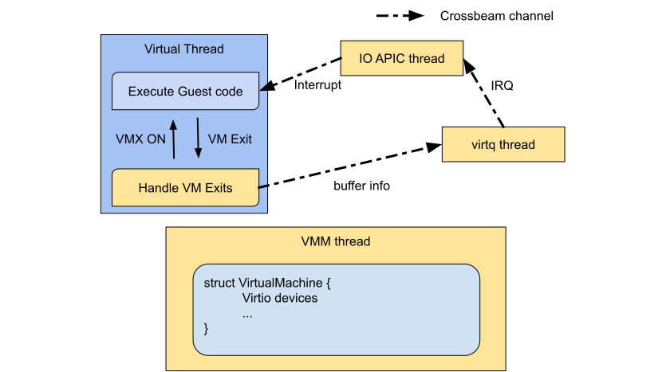

Homepage: akaros/vmm-akaros
xhype is a virtualization library on macOS written in Rust and based on the Hypervisor framework. xhype requires at least macOS 10.15.
Virtual thread model
xhype implements the virtual vthread model. The virtual thread model was proposed by Google engineers and first implemented in Akaros OS, an experimental kernel from Berkeley. A slide introducing virtual threads can be found here.
In the virtual thread model, instead of a virtual machine being a special thing controlled by a device, as in Linux KVM, a VM, or a guest OS, is just some threads of the virtual machine manager. The physical memory address space a VM sees is the same as the virtual address space of the host process, thus a VM can easily share data with the host, which makes a VM’s IO more efficient.
As we see, the host process has several pthreads and several virtual threads. A virthral thread is nothing special but a pthread executing a guest OS’s instructions. For example here virtual threads 1, 2, and 3 are executing codes of Guest OS 1. Virtual threads 4 and 5 are executing Guest OS 2. Let us take vthreads 4 and 5 as an example. From the point of view of guest 2, threads 4 and 5 are just two CPUs. Guest OS 2 might have its own threads (marked by green in the right panel), and it has its own kernel scheduler, which determines how its own threads are executed by vthread 4 and 5. Therefore effectively, a guest’s own threads are just green threads of the whole VMM process.
A guest sees the same memory space as the host, therefore it can share data with the host very easily. They can even share codes with the host. Here I show a very simple example. We just use a function called doubel_a of the host process as the kennel of a VM and spawn a virtual thread. This tiny guest just doubles the global variable NUM_A of the host process. As we could see, in the vthread model, starting a vm is just as easy as creating a few threads.
use xhype::{vthread, VMManager};
use std::sync::Arc;
static mut NUM_A: i32 = 1;
fn double_a() {
unsafe {
NUM_A <<= 1;
}
}
fn main() {
let original_a = unsafe { NUM_A };
let vmm = VMManager::new().unwrap();
let vm = Arc::new(vmm.create_vm(1, None).unwrap());
let handle1 = vthread::spawn(&vm, double_a);
handle1.join().unwrap();
unsafe {
assert_eq!(NUM_A, 2 * original_a);
}
}
The design of xhype

So my goal for this summer is to bring this virtual thread model to macOS and develop a VMM based on Apple’s Hypervisor framework and intel’s VTx hardware virtualization. Here is the design of our VMM, we call it xhype. The VMM thread creates virtual machines, which contains the hardware provided to the guest OS.We implemented several kinds of Virtio hardware. The VMM spawns pthreads for hardware and virtual threads as virtual cpus. A virtual thread is either in the state of executing guest code or handling special requests of the guest OS. The interrupt from hardware to the virtual CPU is implemented with Rust channel.
As of today, we have eight thousand lines of Rust code and a few C and objective C codes to interact with macOS api. We implemented MMIO based virtio net devices, block devices, and random number generators. We implemented a linux kernel loader and a multiboot compliant kernel loader. We successively booted LInux 5.5 flash kernel with a 1.8 megabyte vmm executable.
In the future We might want to implement pci-based virti-io devices. We might want to use xhype as a tool to debug other OSes. We might also want to port xhype to other OSes or port it to ARM-based macOS. For sure in the current codebase, there are still several issues to be resolved.